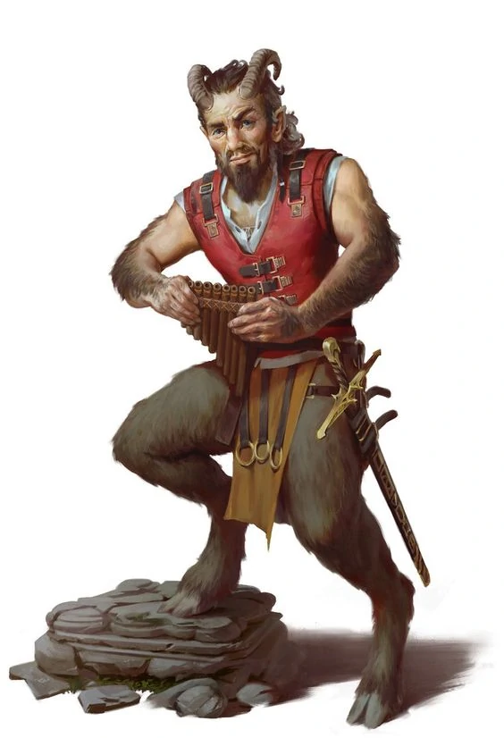

Our Heroes:
- Hector the Well Endowed

- Thalemas the Forgotten

- Tiny Nuggins

- Nightman

- Billy Stubhorn 
Campaign 4: "Salvage Operation"
Our Heroes:
Episode 8
At the council Anders promises 28,000 gold (a fee that is higher due to Tiny’s successful negotiation) for a successful mission of recovering his chest of bills of sale intended for a failed business deal that fell through 3 years ago. To prepare, our heroes head to Xandros to buy a health potion and a Weapon of Warning. Afterwards they head to the Temple of Procan (sorry Nightman, forgot about this one). At the Temple of Procan, Wellgar Brinehanded (CG male human priest), tells the gang that the ship they are looking for, the Emperor of the Waves, has been sighted not far off the coast of Saltmarsh. If they set sail soon, they can catch it before it drifts off.
Thus, our heroes set out immediately. On the ride out Tiny and Hector begin to fight, yet again, over Hector’s lack of respect. Tiny, initially chastises Hector for his lack of respect at the council claiming it embarrassed the party, to which Hector questions Tiny’s dedication to the party. Little is heard after this, but all see the fight ensue. Nightman, Thalemas, and Billy all jump in to break up the fight, but find themselves brawling amongst each other as blows are thrown. Finally, Tiny breaks away and commands his crew to stand at attention, ending the fight. At that point Oceanus informs the gang that there is a Brigantine, flying the flags of the Sea Princes, headed towards them. While Tiny commands Nightman to prepare the sails, Billy uses Gust of Wind to conjure up a might blow to fill the sails, helping our heroes escape from a likely demise.
After escaping, our heroes notice another ship, this time, flying flags of Keoland. They decide to approach and come upon the Soul of Winter commanded by Wolgar Windrune (LN male dwarf veteran). Wolgar invites them upon his ship and learns that both parties are interested in the same mission. Wolgar and Tiny agree to split the profits 50/50 between their ships. Wolgar offers supplies and is happy to accept the help of our powerful heroes (compared to his larger force of 30 weaker Dwarves).
After reaching their agreement, our heroes sail alongside the Soul of Winter for a few hours before they come into sight of The Emperor of the Waves. As they approach, Thalemas notices the ship has had its deck cleared by a tidal wave or hurricane. The gang sends Oceanus below to assess further damage. Oceanus reports damage from a sea creature. After reporting this, Oceanus informs the party that he will head back to Saltmarsh to request reinforcements, albeit this may take some time. The party agrees to continue the mission and not wait. With this information, Wolgar, fearful of losing any men, refuses to send his men. He says “As Dwarves, we are very loyal, but I cannot send my men to their death. They are not as skilled as you. However, For 1000 gold, as opposed to our original request of 14,000 gold, we will watch your ship, give you those supplies, and help you outside the ship.”
The party agrees and moves upon the ship in a row boat manned by 2 Dwarves from Wolgar’s crew. Once they reach the ship they use the hooks and ropes provided by Wolgar to climb up the ship. Billy, Nightman, and Tiny make it up fine, but Thalemas and Hector both fall. Hector falls and dislocates his shoulder. He is hoisted into the rowboat, shoulder reset, and successfully climbs aboard with a serious pain in his shoulder. Thelemas falls, hits his head on the ship on the way down, and is rescued by the Dwarves. After he comes to he climbs up, but with a bit of a concussion. Once aboard, Billy notices the wheel is not connected to the rudder and there is blood, 3 days old, on the planks.
The party then decides to enter the navigator’s room. They must hack down the door to get in. Once in they notice sheets of webbing. As they move carefully through the room they are surprise attacked by a spider, though it misses its biting of Hector. In response, Hector hits the spider with an arrow. Immediately after, Nightman conjures a successful Eldritch Blast. During the commotion, an Ettercap emerges. At the same time the Giant Spider casts a web upon Hector, immobilizing him. Tiny slashes the arm of the Ettercap while Billy crushes the juicy head of the Giant Spider with his banjo. As Hector breaks free of his sticky tomb, the Ettercap bites Nightman right before Thalemas is able to slash it in the chest. Enraged, the Ettercap bites Thalemas and wraps him in a web. Suddenly, Billy constructs a fire while Hector hits the Ettercap with an arrow. As Billy’s fire burns the Ettercap, Nightman eradicates it with Eldritch Blast. Right as the party begins to calm down they are engaged with a swarm of spiders. Billy fuels his fire and kills 2/3s of the swarm. While Hector slashes at the little bastards, Billy drags his Thorn Whip and turns their bodies into carcasses.
After leaving the navigator’s room our heroes head to the Altar of Lolth. Immediately upon entering another Giant Spider, 4 swarms of spiders, and an Ettercap attack the group. Hector perceives them and hits the Giant Spider in the eye with an arrow. Nightman uses Burning Hands to eradicate the swarm. Billy follows suit and melts away another swarm of spiders with his fire abilities. Hector is able to nock another arrow and pierces the head of the Giant Spider. Meanwhile, Tiny was successful smashing a swarm of spiders with the blunt ends of his sword through either sheer determination or some act of his god (God). Hector lands another successful arrow, this time through the brain of the Ettercap. During the chaos, Thalemas takes after Tiny and is able to slash through the last swarm of spiders.
Tired and wounded from climbing and battling onto and upon the ship, the party tries to rest. Their efforts are thwarted by a swarm of spiders, patrolling the ship. The spiders are easy dispatched, but our heroes are rudely informed that rest is not an option on this mission.
Our heroes descend, using the stairs to the galley. They notice a trapdoor but leave it alone. Instead they head through the door into the area of the Unholy Shrine. Upon opening the door they are attacked by Krell Grohlg (NE male half-orc Druid) and his Phase Spider who bites and poisons Thalemas, putting him at near death. Krell tries to negotiation with the party to be let go, to which they decline. It is at this moment that Krell informs the near dead Thalemas that he was happy to have helped kill Thalemas’ family. Krell claims that he was raised by Thalemas’ group of Druids (those trying to rid the Dredwood of evil), but betrayed them for greater power from the Master of the Dreadwood, resulting in the death of everyone Thalemas ever loved when he was a child. Before Thalemas could whimper “why” Nightman reduced Krell to a pile of miserable ash with Eldritch Blast. At that same time the Phase Spider reemerged from the Ethereal Plane. Taking the opportunity, Billy shapeshifts into an Ape, smashes the body of the Phase Spider, giving Hector the opportunity to finish it with an arrow. While they kill the Phase Spider, our heroes neglect near death Thalemas, who is bit and poisoned by a Giant Spider. In a rage, Billy, as an ape, smashes the Giant Spider and then rips the second Giant Spider like a banana (although he doesn’t eat it). While the Ape Billy is neutralizing the threats, Tiny uses Lay on Hands to restore Thalemas to near life. With very little in him, except rage from learning of his parents betrayal, Thalemas uses Scorching Ray to melt the last Giant Spider to a gooey pulp.
After Thalemas’ near death, the group heals up with health potions and spells and moves into the Spider’s Nest, unknowing to them. 2 Giant Spiders and 1 Ettercap bite and almost kill a freshly healed Thalemas. Hector drills the Ettercap with an arrow, killing it. Nightman uses Eldritch Blast followed by another of Hector’s arrows to kill one Giant Spider. The last Giant Spider loses its head to Tiny’s large sword.
Episode 9
After leaving the spiders’ nest our heroes continue to explore the ship. After exploring various empty rooms the heroes only find 250 gold pieces and an unwebbed room that appears to be Krell’s chambers, full of gnawed bones and signs of heinous ritualist murders. Thus, they finally move into the ship’s food storage where they notice 4 large webbed sacks. Upon cutting into the first sack Hector is bit by a maw demon. This awakens the other 3 maw demons one who bites Billy and another that takes a large chunk out of Thalemas’s back, leaving him moderately wounded. Tiny responds by slashing into the chest of the maw demon who bite Hector, Thalemas misses the same maw demon with scorching ray, but causes minor burns to the one who bit Billy, and horrific burns, in retribution, to the one who bit Thalemas. Hector places a well shot arrow into the neck of the victim of Thalemas’s scorching ray and in rapid succession another arrow into the demon who bit him. Finally, Nightman eradicates the burnt, arrow ridden maw demon with an eldritch blast. While the battle ensue, Billy transforms into a wolf spider and rips the ass off of the maw demon who initially bit him with Billy’s teeth, killing it. Tiny places another large wound on his original target, leaving the maw demon near death. Nightman uses eldritch blast again to severely weaken the original demon, then Billy bites and paralyzes it with venom. Finally Tiny cuts the monster’s head off. After the battle our heroes discover jewelry and 450 gold. They then heal with spells and potions before heading below deck. As the approach the stairs to the hull, Billy uses his spider senses to realize there are no more creature moving within the webbed areas of the ship.
Once at the door to the bellows of the ship, our heroes hoist up an intentionally placed large piece of wood that barred the door shut. As they descend the encounter 3 feet of water in the slowly sinking ship, making it difficult to move. They also notice much debris and trash in an obviously long abandoned hull – even more filthy than the rest of the ship, despite its plethora of cobwebs. While initially scanning the room, Thalames notices a blue box with a large A inscribed on it. “That must be Ander’s box” Thalemas says to the team. However at the same time the group notices 4 humanoid figures floating (apparently drowned) in the water. Instead of approaching, Thalemas casts his wild fire spirit to fly over in investigate. Wisely so, because as soon as the spirit flies close to the apparent corpses they come alive and are reviled as ghasts. They move towards Thalemas’s spirt as quickly as the water will allow. Nightman hits one with eldritch blast, Thalemas one with scorching ray, the wild spirt one with fiery seed, and hector one with an arrow. One ghast bites Billy killing his spider form, in response Billy, now in normal form, bashes the ghast with his nature fortified banjo in double succession. Tiny cuts the eerily long tongue off of the same ghast, ending its unnatural existence. Thalemas uses moonbeam to scorch 2 ghasts, while another claws Billy’s chest. Billy smashes the ghast with his banjo while Tiny slashes its arm. Thalemas shifts his moonbeam to roast one of the ghasts while they continue their approach. A ghast bites hector right after he is successful in killing its counterpart with an arrow through its neck, and another arrow into a third ghast’s chest. Nightman turns the 3rd ghast into ashes with eldritch blast, while Thalemas’s wild spirit commits the last ghast to a similar fate with fiery seed.
With the ghasts dead, the party searched their remains and discover a Sea Princes’ bracelet. The party comes to a conclusion that this may incriminate not Gellean Primewater, but rather Anders Solomer in a connection between the smugglers and the pirates. However, they quickly remember the box they are to retrieve for Anders and determine they will first get their payment and then present the incrementing evidence to the counsel. As Hector begins to lift the heavy box, which would’ve been more wisely lifted by a stronger party member, all of the harmless spiders on the ship begin to scurry away. As soon as the heroes notice the fleeing of the spiders, they feel the ship shift to its port side and a great rumbling. Then, tentacles of a giant octopus begin ripping through the ship’s hull as water rushes in. The party briefly debates taking on the octopus, but the dire need to flee and rational intuition dose their bravado. Thus Hector attempts to open the box, but to no avail as it is magically seal. Meanwhile Tiny, Nightman, Thalames, and Billy flee to the stairwell, wrongly assuming Hector had opened the chest. As the water continues to flood the ship Hector greatly struggles to lift the chest. As they approach the stairs, Billy notices Hector is not with them and proceeds to turn into a camel to assist him with the chest. However, Hector still struggles with lifting onto the camel’s back. Finally Hector is able to hoist it on Billy-Camel’s back just as the water rises to a point requiring them to swim. While this was occurring, the remainder of the party greatly struggled to climb the wretched stairs due to the ship’s tilting and the constant barrage from the octopus’s tentacles. The severe damage our heroes took from the trashing made them worry for their lives, causing them to consider leaving the box. Nightman will forever be remembered as saying “fuck these stairs!” Finally the party climbs the stairs to a sinking second level, all in tow, with Tiny leading the way. Again, dodging and being thrown around the room by the tentacles. The seemed to gather their footing on the second level as falls up the stairs we less prevalent. Then, at last, bloodied, bruised, broken boned, and at near death, our heroes jump ship down to the dwarves of the Soul of Winter who awaited 20 feet away in row boats. Tiny’s intuition had been correct, these dwarves were indeed trustworthy.
After reaching safety, the party gives the captain of the Soul of Winter 280 gold pieces for keeping his promise. To which he is very pleased, having expected nothing. He promises his friendship and gives Billy a magical walnut that if made to sprout will signal to the new dwarven allies that aid is needed, a distress beacon so to speak.
Healed, but memories scarred, the party return to the council and present the chest to Anders. Upon receiving the payment promised 28,000 gold pieces, Thalemas angrily accuses Anders of working with the Sea Princes. Such a damning claim causes the traditionalists (Eda and Gallen) in the council to gasp, while the loyalists (Eliander and Manistrad) grow wide-eyed in anticipation of the ongoing claims. Thalemas presents the bracelet found on the ghast’s corpse and demands to know more about this chest. Anders maintains, frantically, that he knows nothing of the Sea Princes other than their well-known piracy, that the ship was lost for years and anyone could’ve settled in it. In fact, it could have been the Sea Princes who initially caused it to go missing. Lastly, he claims that the box is full of bills of credit worth a hefty sum and that is why he wanted them back. a simple business transaction, albeit an obviously dangerous one. Something he made clear to begin with, hence why he hired capable adventurers. Thalemas roars with rage that the giant octopus was no “dangerous business transaction for adventurers. It was a suicide mission that you (Anders) were reluctant to disclose for nefarious reasons.” Finally, Eda chimes in and demands the council vote as to whether Anders should be required to open the box. The council votes 3-1 (Gellan voting ‘no’ on claims that it violates a trader’s rights). Complying, Anders opens the box and it reveals the bills of credit, but also a note reading:
To my most loyal of friends,
It has come to my attention that you are in consideration of accepting of our agreement to arm the Lizard folk to defend against the Sahuagin. I am pleased to confess that, while neither party means a great deal to either of us, the disruption it will create shall provide us both with the potential to promote our respective goals. Surely you understand that turmoil near Saltmarsh will provide you with ample opportunity to raid their coasts and obtain the goods you did prior to Seaton’s annoying interest in our region. By accepting our proposal you will not only receive a great allowance from the Brotherhood, but our intelligence and military assistance as needed.
With the upmost respect,
Skerrin Wavechaser
Grand Master of the Scarlet Brotherhood
Anders stammers in disbelief saying “not my most trusted house-keeper”. In a unanimous vote, Anders is escorted to his home by the guards under house arrest pending further investigation and temporarily removed from the council. Meanwhile, the search for Skerrin Wavechaser begins.
The council informs our heroes that this is very disturbing news as the Scarlet Brotherhood was deemed just a myth by all but the most insane of citizens. They remind the party that the more pressing issue is the need to prepare for the attack on the Sahuagin. While the Scarlet Brotherhood hides in the dark, the Sahuagin may destroy our Lizard allies any day. Thus the council asks the party to tend to their own preparations or those of Saltmarsh and return in one month, ready for war.